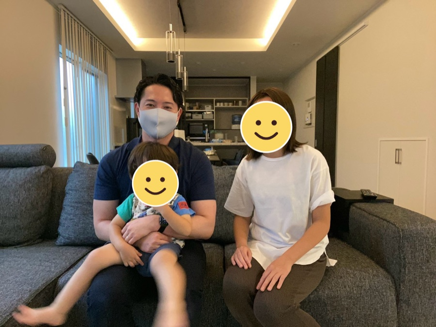

3歳・男の子のご家庭
Q. どんなお悩みでしたか?
3歳になっても話せる単語が10個ほどで、2語文が出ませんでした。健診では「様子を見ましょう」と言われましたが、このまま待っていていいのか毎日不安でした。
Q. HOPEを受けてどうなりましたか?
家での遊び方や声のかけ方を具体的に教えてもらい、私も何をすればいいのかがわかるようになりました。息子も先生が来る日を楽しみにしていて、少しずつ言える言葉が増えてきました。
Q. 悩んでいる方へアドバイスをお願いします。
「様子を見る」間にも、できることはありました。一人で抱え込まずに、まずは相談してみてほしいです。